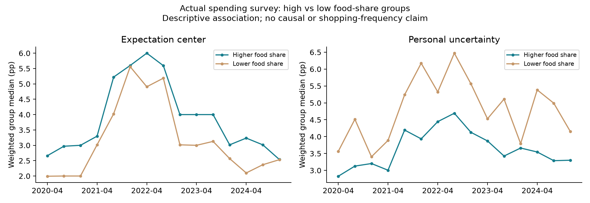
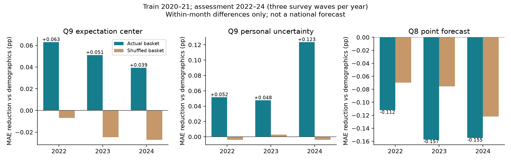

SCE真实消费篮子研究① 实际数据给了我们什么线索？
食品支出占比较高的一组，15次调查的预期中心都更高；但个人不确定性都更低。支出占比与预期有关，不等于注意力或因果关系。

每年4、8、12月；组中位数使用同月核心调查权重。低组≤25分位，高组≥75分位；不是全国headline。
② 控制人口特征以后，篮子增加多少信息？
2020—2021年学习，2022—2024年复查。本人篮子对Q9中心和个人不确定性有很小的改善，Q8点预测没有改善；随机错配没有稳定增益。

这是月内个体差异的时间外统计对照，不是Agent运行结果，也不是全国预测。每年只有三次支出调查；不能把篮子当成解决全部误差的答案。
③ 下一次模型试验只改变一件事
- 不提供消费篮子。
- 提供本人2021年4月自报的九类支出份额。
- 提供在同组人中随机置换的完整篮子。
5、6月各32人，同人三组，完整共同E、原问卷、DeepSeek、温度0.5保持一致。食品占比分四组各8人，选人不看通胀答案。既比较中位数与分布，也比较食品分组差距；仅仅变得更分散不算成功。
当前费用$0。自动审批要求明确确认真实支出数据外发，已向用户发送确认；收到答复后才能调用。全部达输出上限时保守预算约$0.843，总封顶$1，不自动重试。
④ 篮子是线索，个人价格体验才是后续机制
钱花在哪里 ≠ 多久购买一次 ≠ 看到什么价格变化 ≠ 如何形成未来预期。文献支持继续研究购物接触与信息更新，不能直接把九类份额当成注意力权重或CPI权重。
近期篮子可关联人群偏老，5/6月60岁以上占比约比完整样本高6个百分点；小试只能评价选中人。路线B还须验证公开版本及条件合成，不能调用预测月的真人篮子。
完整报告与文件路径 · 数据与理论依据 · 无个人记录的封存摘要
原始官方Excel、问卷与论文存于 data/raw/sce_spending_20261009；最新准备包 outputs/sce_native_spending_trial_20261009_v4。